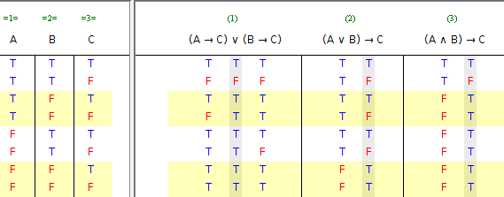

Na pergunta 8 pede-se para elaborar a tabela de verdade para as três frases
(I) (A → C) ∨ (B → C)
(II) (A ∨ B) → C
(III) (A ∧ B) → C
A tabela de verdade solicitada é a seguinte:

As frases verdadeiras da pergunta 9 são as seguintes:
I e III são equivalentes (as colunas de valores de verdade correspondentes são iguais)
I é consequência de II (sempre que II é verdade I também é)
III é consequência de II (sempre que II é verdade III também é)